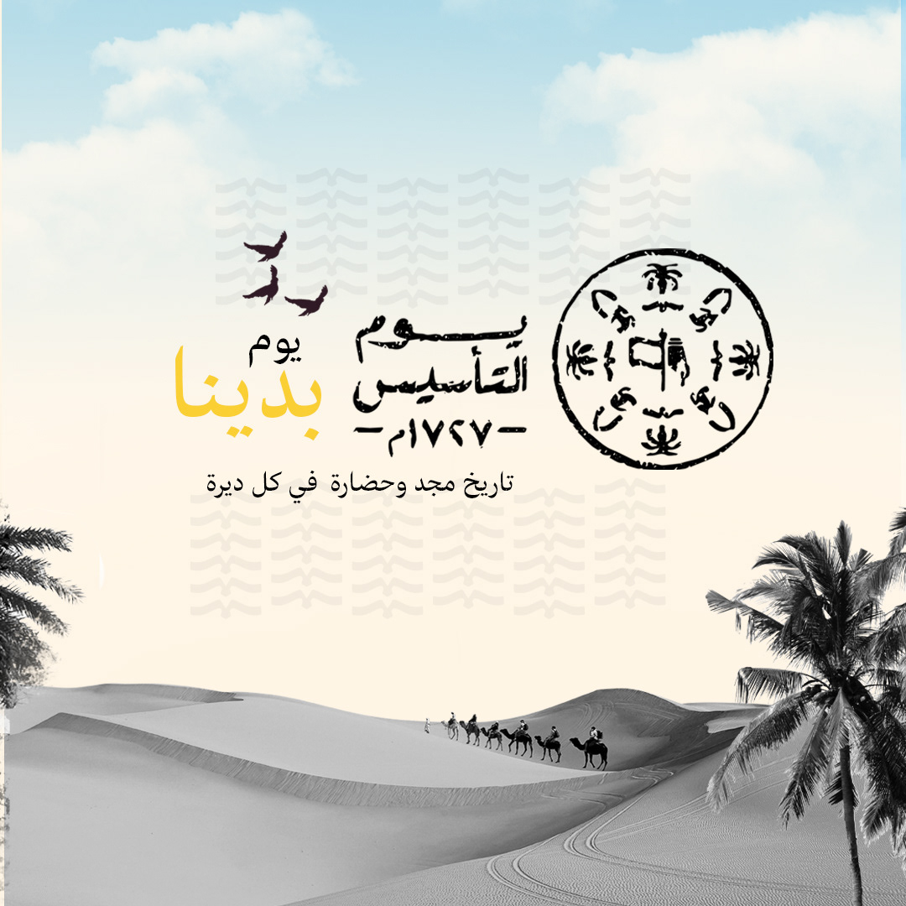

<!DOCTYPE html>

<html>
<head>
  <meta http-equiv="CONTENT-TYPE" content="text/html; charset=UTF-8">
   <meta name="viewport" content="width=device-width, initial-scale=1">
 
  <title></title>
  <link rel="stylesheet" href="rro.css">
</head>
<body>
</body>
</html>
<div class="menu">
  <ul>
    <li><a href="tel:+201097038391">اتصل بنا </a></li>
    <li><a href="#abo"> نبذة</a></li>
     <li><a href="#top"> الصفحة الرئيسية</a></li>
    
    
    
    
    
    
    
    
  </ul>
</div>
<div class="main">
  <h1 id="top">يوم التأسيس</h1>
  <p> يوم التأسيس السعودي هو يوم وطني في المملكة العربية السعودية، ويحتفل به في 22 فبراير من كل عام. ويهدف هذا اليوم إلى التذكير بتأسيس الدولة السعودية على يد الملك عبد العزيز بن عبد الرحمن آل سعود في عام 1932.

    </p>
  <br>
  <h2 id="lol"></h2>
  <p>في هذا اليوم، تقيم الحكومة السعودية العديد من الاحتفالات والفعاليات في جميع أنحاء المملكة، بما في ذلك العروض العسكرية والاحتفالات الثقافية والمعارض الفنية. كما يتم توزيع الأوسمة والجوائز على المواطنين الذين قدموا مساهمات بارزة في خدمة البلاد
  </p>
  
    <h3 id="dis"></h3>
  <p>يوم التأسيس السعودي هو فرصة للاحتفال بتاريخ المملكة وتقدير جهود الأجيال السابقة في بناء الدولة. كما يعزز هذا اليوم الشعور بالانتماء الوطني والفخر بالهوية السعودية
  </p>
  
</div>
<div class="footer">
  <h2 id="abo">نبذة</h2>
 <h4><p>هذا الموقع يوفر نظرة عامة عن يوم التأسيس السعودي، إذا كنت ترغب في الحصول على معلومات أكثر تفصيلاً، يرجى الاتصال بنا</p></h4>
  <h2>روابط مفيدة</h2>
  <ul>
  <li><a href="https://mawdoo3.com/"target="_blank">الموقع الثالث</a></li>
  <li><a href="https://mawdoo3.com/"target="_blank">الموقع الثاني</a></li>
  <li><a href="https://mawdoo3.com/"target="_blank">الموقع الأول</a></li>
    </ul>
</div>
